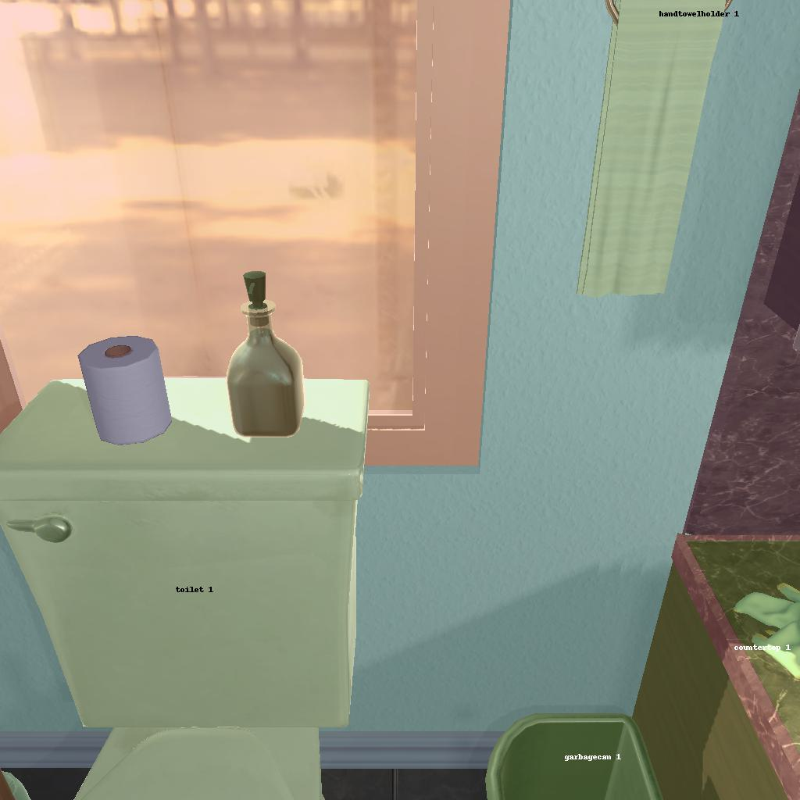

---------------------------------------------------------task: 27---------------------------------------------------------
--------------------------------------------------------------------------------------------------------------------------------------------------------------------
--------------------------------------------------------------------------------------------------------------------------------------------------------------------
Step:--------------------------------------------------------------------------0-------------------------------------------------------------------------------
----------------------------------------
VLM Prompt:
Image1:
**Instruction**
1. Analyze the provided image to identify all visible household objects, focusing on those relevant to the task description "find two soapbottle and put them in garbagecan."
2. Use the analysis of the image and the task hint "The agent must find an object of the desired type, pick it up, find the correct location to place it, put it down there, then look for another object of the desired type, pick it up, return to previous location, and put it down there with the other object." to answer the question: what is the most reasonable action in the choices for the task description "find two soapbottle and put them in garbagecan"?
4. Decide and write the answer using the template: The answer is: (i): , where i is the real number. If there is no desired object in the image, search every place based on **Initial Observation** to find the object. And if no one is exactly correct, choose a similar answer.
**Initial Observation**
You are in the middle of a room. Looking quickly around you, you can see countertop (1), sinkbasin (1-2), sink (1-2), garbagecan (1), drawer (1-2), toilet (1), handtowelholder (1)
**Answer Choices**
(1): go to countertop 1
(2): go to sinkbasin 1
(3): go to sink 1
(4): go to garbagecan 1
(5): go to drawer 1
(6): go to drawer 2
(7): go to sink 2
(8): go to sinkbasin 2
(9): go to toilet 1
(10): go to handtowelholder 1
**Answer**
Let's think step by step by following the instructions.
----------------------------------------
----------------------------------------
Original Response:
Firstly, we need to find two soap bottles. Since none are visible in the provided image, we must search every place based on the Initial Observation to find the object.
The most common places where soap bottles may be found are on countertops, sink basins, or in drawers. Therefore, we should check these locations first.
Given the task description and the Initial Observation, we can eliminate some options as they are less likely to have soap bottles. For example, it is less common for soap bottles to be on a toilet, handtowelholder, or inside a garbagecan.
Considering the remaining options, the most reasonable next action would be to go to either the countertop or sinkbasin, as these are the places where soap bottles are most likely to be found. Since countertop 1 is the first option listed and because countertops generally provide more storage or placement space for items like soap bottles, it might be slightly more likely for the soap bottles to be there.
The answer is: (1): go to countertop 1.
----------------------------------------
----------------------------------------
>>> Refine Original VLM Response and Get Pure Action: go to countertop 1
----------------------------------------
-----------------------------------------------------------------
Running time: 10.919076919555664 seconds
Total Money: 17.231180000000002
-----------------------------------------------------------------
-----------------------------------------------------------------
Text Observation:You arrive at loc 0. On the countertop 1, you see a faucet 1, a cloth 1, a soapbar 1, and a soapbottle 1.
-----------------------------------------------------------------
UNSUCCEED